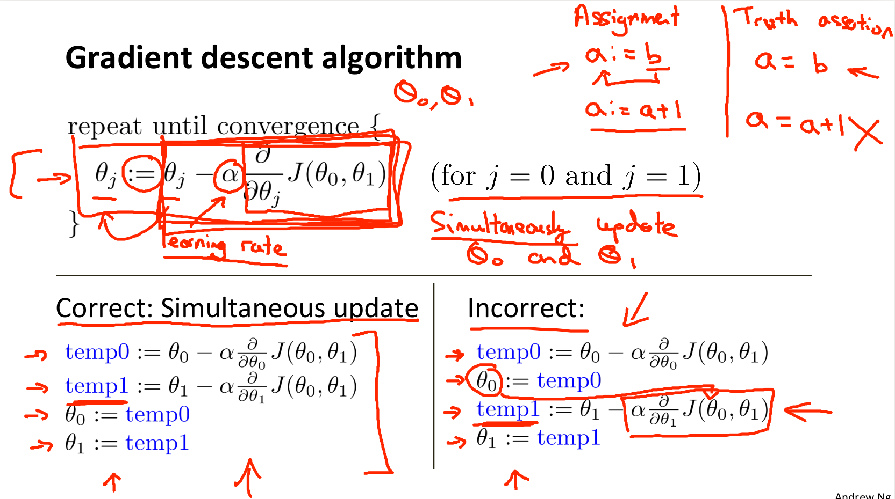
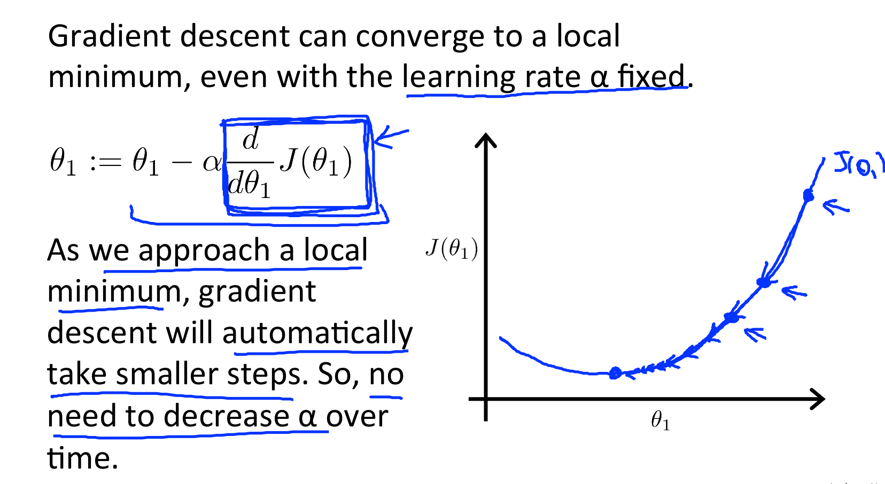
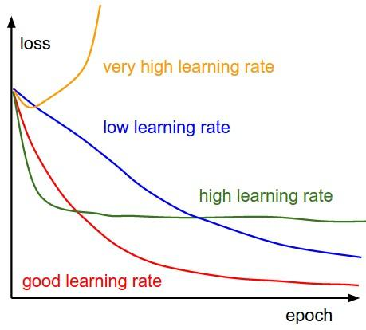

Basic Concepts in Machine Learning
1.信息熵(information entropy)
信息熵是表示随机变量不确定性的度量。随机事件的不确定性叫做“熵”. 信息量的量化度量叫做“熵”.变量的不确定性越大，熵就越大，要把它搞清楚所需要的信息量也就越大. 熵的公式如下(李航《统计学习方法》 P60):
信息熵通常用来描述整个随机分布所带来的信息量平均值，更具统计特性。信息熵也叫香农熵，在机器学习中，由于熵的计算是依据样本数据而来，故也叫经验熵。
条件熵公式如下(李航《统计学习方法》 P61):
根据熵的连锁规则，有 $H(X,Y) = H(X) + H(Y|X) = H(Y) + H(X|Y)$, 因此可以推出$H(X) - H(X|Y) = H(Y) - H(Y|X)$
2.互信息(mutual information)
两个随机事件的相关性的量化度量叫做“互信息”.
互信息是熵与条件熵的差(熵与条件熵之差称为互信息. 李航《统计学习方法》P61), 取值在0到min(H(X), H(Y))之间，当X和Y完全相关时，它的取值为H(X)，且H(X) = H(Y)；当两者完全无关时，它的取值为0。
3.信息增益(information gain)
信息增益表示得知特征X的信息而使得类Y的信息的不确定性减少的程度(对比“互信息”和“信息增益”的定义)。
决策树学习中的信息增益等价于训练数据集中类与特征的互信息。李航《统计学习方法》 P61
4.相对熵（也叫 交叉熵）
相对熵用于衡量两个取值为正数的函数的相关性.
- 对于两个完全相同的函数，它们的相对熵为0
- 相对熵越大，两个函数的差异越大；反之，相对熵越小，差异越小
- 对于概率分布或者概率密度函数，如果取值均大于0，相对熵可以度量两个随机分布的差异性
5.马尔可夫假设
马尔可夫为了简化问题，提出了一种简化的假设：即随机过程中各个状态$St$的概率分布，只与它的前一个状态$S{t-1}$有关，即$P(St|S_1, S_2,…, S{t-1}) = P(St|S{t-1})$。
这个假设后来被命名为马尔可夫假设，而符合这个假设的随机过程称为马尔可夫过程，也称为马尔可夫链。
[数学之美 P53]
6.激活函数
- 不用激活函数可不可以?
答案是不可以。激活函数的主要作用是提供网络的非线性建模能力。如果没有激活函数，那么该网络仅能够表达线性映射，此时即便有再多的隐藏层，其整个网络跟单层神经网络也是等价的。因此也可以认为，只有加入了激活函数之后，深度神经网络才具备了分层的非线性映射学习能力。 - 激活函数应该具有什么样的性质?
- 可微性: 当优化方法是基于梯度的时候，这个性质是必须的
- 单调性: 当激活函数是单调的时候，单层网络能够保证是凸函数
- 输出值的范围: 当激活函数输出值是”有限”的时候，基于梯度的优化方法会更加稳定，因为特征的表示受有限权值的影响更显著;当激活函数的输出是”无限”的时候，模型的训练会更加高效，不过在这种情况下，一般需要更小的learning rate
- 常见的激活函数多是分段线性和具有指数形状的非线性函数, 例如: sigmoid、tanh、ReLU(Leaky-ReLU、P-ReLU)、ELU、Maxout。各种激活函数的函数曲线以及优缺点请参见这里。
7.损失函数 & 风险函数
参考 李航《统计学习方法》 P7
损失函数是度量模型一次预测的好坏; 风险函数是度量平均意义下模型预测的好坏
损失函数(loss function)和代价函数(cost function)是同一个东西, 用来度量预测错误的程度.
损失函数是预测值f(X)和真实值Y的非负实值函数，记作L(Y, f(X)). 常用的损失函数包括：0-1损失函数、平方损失函数、绝对损失函数、对数损失函数.
损失函数的期望是理论上模型f(X)关于联合分布P(X,Y)的平均意义下的损失，称为风险函数(risk function)或期望损失(expected loss).
8.梯度下降法(Gradient Descent)
梯度下降法求代价函数(cost function)的最小值, 梯度下降法要求所有的参数必须同时更新(simultaneous update)


9.学习率的设置

References:
Introduction to CNN Keras - 0.997 (top 6%)
文中有动态调整学习率的实现方法
10. PCA降维
So for finding features usable for any kind of model a PCA without normalization would perform badly.
References:
Why do we need to normalize data before principal component analysis (PCA)?
11. Bootstrap方法
Bootstrap是统计学习中一种重采样（Resampling）技术。机器学习中的Bagging，AdaBoost等方法其实都蕴含了Bootstrap的思想。
Bootstrap的一般的抽样方式都是“有放回地全抽”（其实样本量也要视情况而定，不一定非要与原样本量相等），意思就是抽取的Bootstrap样本量与原样本相同，只是在抽样方式上采取有放回地抽，这样的抽样可以进行B次，每次都可以求一个相应的统计量/估计量，最后看看这个统计量的稳定性如何（用方差表示）。
Bootstrap法是以原始数据为基础的模拟抽样统计推断法，可用于研究一组数据的某统计量的分布特征，特别适用于那些难以用常规方法导出对参数的区间估计、假设检验等问题。其基本思想是：在原始数据的范围内作有放回的再抽样, 样本容量仍为n，原始数据中每个观察单位每次被抽到的概率相等为1/n , 所得样本称为Bootstrap样本。
References:
Pitfalls
- 当要to_categorical()的数据中存在负数时就会出现问题，所以在使用to_categorical()时必须将数据处理成非负数
1
2# NOTE: np_utils.to_categorical() does not take negative values
Y = np_utils.to_categorical(Y, num_classes=2)